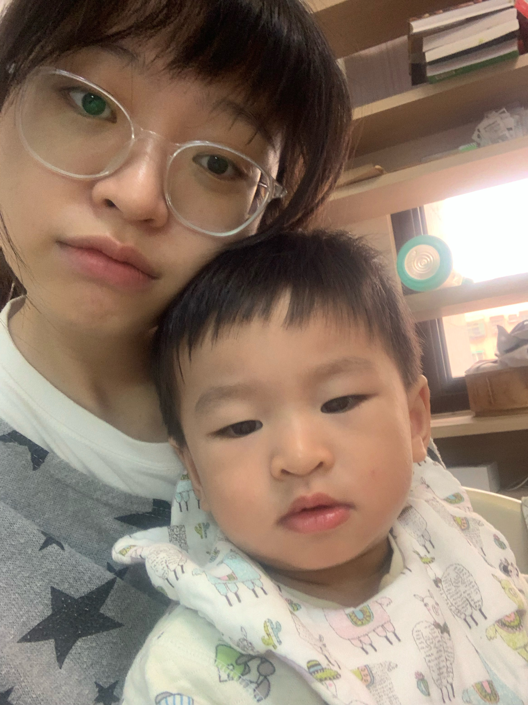
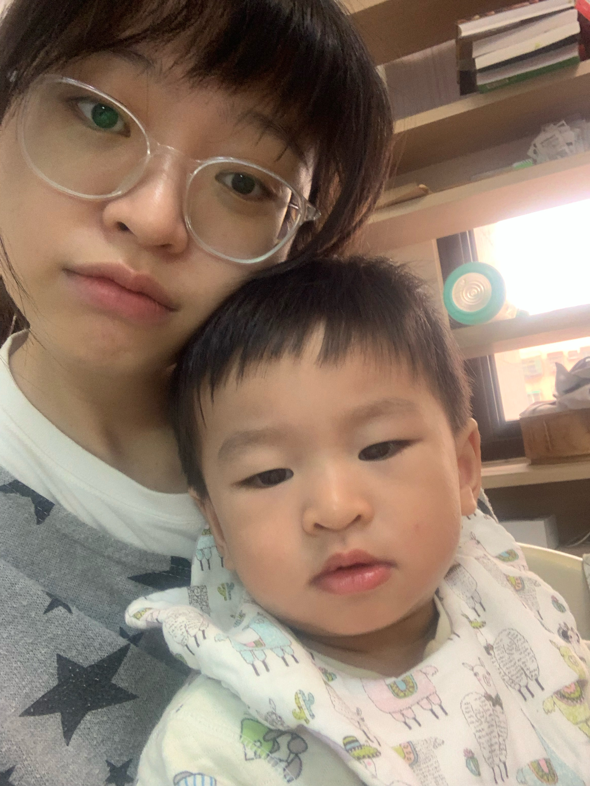

一、兩百字內的個人簡介
彭彭老師、Bootcamp各位同仁，大家好
我是邱愉謙，就讀於輔仁大學食品科學系，畢業後考取目前任職於爭鮮，擔任食安部門中食品技師，負責管理旗下四間品牌食品安全，讓顧客們能吃的安全與放心。
喜歡閱讀，閱讀類型不拘，床頭總是放兩三本書，把閱讀當作睡前催眠和下班通車逃避工作後胡思亂想的消遣。
喜歡運動、爬山、旅行、跟大自然接觸的一切，近期因為氣候變遷所以關注環保(從自身做起)。
喜歡烘焙，曾經為了烘焙改變人生跑道，在大學時從傳播系轉系到食品科學系。
目前新增一項愛好……看彭彭老師的影片學習寫程式。 
我是邱愉謙，就讀於輔仁大學食品科學系，畢業後考取目前任職於爭鮮，擔任食安部門中食品技師，負責管理旗下四間品牌食品安全，讓顧客們能吃的安全與放心。
喜歡閱讀，閱讀類型不拘，床頭總是放兩三本書，把閱讀當作睡前催眠和下班通車逃避工作後胡思亂想的消遣。
喜歡運動、爬山、旅行、跟大自然接觸的一切，近期因為氣候變遷所以關注環保(從自身做起)。
喜歡烘焙，曾經為了烘焙改變人生跑道，在大學時從傳播系轉系到食品科學系。
目前新增一項愛好……看彭彭老師的影片學習寫程式。 
二、為什麼想成為前端、後端、或全端工程師？
曾經我是很討厭電腦科技的保守派，對於使用電腦碰到什麼困難，我雙手一攤找尋救兵，電腦中的複雜網絡對我而言是一竅不通。
從來沒有想過進入資訊科技產業，直到我接觸到股票。
出社會後，面臨到最現實的問題—賺錢，對於餐飲業來說，雖然是成熟發展產業，工作機會遍地都是，但薪資的天花板也許就是4萬塊了，即使畢業後已考取一張專業技師證照，也難尋較有發展性的工作，所以開始接觸股票交易，期望有一個不錯的被動收入。
投入股市已有兩年的時間，在我研究投資的公司基本面時，發現似乎有前瞻性成長的公司，都不脫是科技類股，隨著閱讀報章雜誌，觀察市場浪潮，越來越多新時代趨勢、新興產業的崛起，相較於自身傳產業的穩定沉寂，科技業的活躍蓬勃讓我非常嚮往，甚至期待自己也能參與其中。
當然也有經濟考量，科技業的工作就算是底層，薪資也可以經由學習及技術慢慢爬升，希望在未來經濟無虞的情況下，能跟我以前的所學結合，譜出一條不一樣的人生職涯方向，並對社會有所貢獻。
從來沒有想過進入資訊科技產業，直到我接觸到股票。
出社會後，面臨到最現實的問題—賺錢，對於餐飲業來說，雖然是成熟發展產業，工作機會遍地都是，但薪資的天花板也許就是4萬塊了，即使畢業後已考取一張專業技師證照，也難尋較有發展性的工作，所以開始接觸股票交易，期望有一個不錯的被動收入。
投入股市已有兩年的時間，在我研究投資的公司基本面時，發現似乎有前瞻性成長的公司，都不脫是科技類股，隨著閱讀報章雜誌，觀察市場浪潮，越來越多新時代趨勢、新興產業的崛起，相較於自身傳產業的穩定沉寂，科技業的活躍蓬勃讓我非常嚮往，甚至期待自己也能參與其中。
當然也有經濟考量，科技業的工作就算是底層，薪資也可以經由學習及技術慢慢爬升，希望在未來經濟無虞的情況下，能跟我以前的所學結合，譜出一條不一樣的人生職涯方向，並對社會有所貢獻。
三、為了成為軟體工程師，曾經做過什麼努力？
因為工作時間並不能有閒暇餘裕可以學習，所以基本學習都是在下班後與假日時，一天聽1小時左右的課程，加上實際練習、思考、找尋答案的時間可能是3小時(下班後~睡覺前)，假日的時間基本上抽出一天(約8小時)用來複習平日的課程。
我認為學習重點應該不是進度多快，而是穩紮穩打，能夠在不同概念中找出化繁為簡的公式，並且能夠靈活運用，這樣才算精通。
初學是從C語言入門影片開始，我從課程中認識基礎的語法、概念、不同種類程式敘述的邏輯，並且在練習實作時，能感受到久違的頭腦運動，如果打1次不會，就要打10次，因為程式除了基礎邏輯概念外，很多是一種直覺與經驗，隨著每次練習都感受到自己一點一滴的進步，C語言非常嚴謹， 遺漏一個結尾符號、宣告變數，就沒辦法執行程式，這些基礎建立對於初入門的我非常有幫助。
C語言課程告一段落後，我接著學習Python，也因為影片認識了彭彭老師，Python給我的感覺非常彈性，但也更直覺了些，其實我有一半的時間都是停下影片思考，為什麼在這邊會這樣寫，一邊從舊影片中在撈取基本概念再複習一次，也可能是因為摸不清楚彈性的章法，我自認為Python的入門基礎相當薄弱，之後想繼續在Python語言上好好打底。
目前我在學習Javascript及CSS，這算是前端工程師的必備技能，因為要寫這篇申請履歷的因素，也順便學起來了，在學習Javascript時，涉及很多番外因素(EX:JSON、AJAX)等等，我曾經在看完影片後，腦袋冒出:他說的都是中文，我怎麼卻都聽不懂!? 於是開始網站搜尋相關知識，就這樣漸漸累積概念架構，雖然剛開始學習新語言總會經歷一種渾亂的風暴，但我很享受這樣從不懂到弄懂的自我學習過程，很有成就感，也是進步的動力。
我認為學習重點應該不是進度多快，而是穩紮穩打，能夠在不同概念中找出化繁為簡的公式，並且能夠靈活運用，這樣才算精通。
初學是從C語言入門影片開始，我從課程中認識基礎的語法、概念、不同種類程式敘述的邏輯，並且在練習實作時，能感受到久違的頭腦運動，如果打1次不會，就要打10次，因為程式除了基礎邏輯概念外，很多是一種直覺與經驗，隨著每次練習都感受到自己一點一滴的進步，C語言非常嚴謹， 遺漏一個結尾符號、宣告變數，就沒辦法執行程式，這些基礎建立對於初入門的我非常有幫助。
C語言課程告一段落後，我接著學習Python，也因為影片認識了彭彭老師，Python給我的感覺非常彈性，但也更直覺了些，其實我有一半的時間都是停下影片思考，為什麼在這邊會這樣寫，一邊從舊影片中在撈取基本概念再複習一次，也可能是因為摸不清楚彈性的章法，我自認為Python的入門基礎相當薄弱，之後想繼續在Python語言上好好打底。
目前我在學習Javascript及CSS，這算是前端工程師的必備技能，因為要寫這篇申請履歷的因素，也順便學起來了，在學習Javascript時，涉及很多番外因素(EX:JSON、AJAX)等等，我曾經在看完影片後，腦袋冒出:他說的都是中文，我怎麼卻都聽不懂!? 於是開始網站搜尋相關知識，就這樣漸漸累積概念架構，雖然剛開始學習新語言總會經歷一種渾亂的風暴，但我很享受這樣從不懂到弄懂的自我學習過程，很有成就感，也是進步的動力。
四、如果參與這個計畫，會怎麼安排學習時間？
在基礎薄弱的前提下，已經在心裡打好一個要「傾盡全力」的底了，甚至第一屆畢業的學姊說除了偶爾一次的出遊外，她每時每刻都在做/想程式相關的事情。
從彭彭的招生直播中已知道課程一周最少要投入60小時學習及實作，相當於一天8.5小時，我會當作上班一樣規劃。
主要目標是完成每周專案進度，如果過程中我有不了解的部分，我會透過網路學習找答案，讓自己順利完成進度，也可以補足自己不了解的部分。
若超乎預期的順利，希望可以跟第一屆畢業學長一樣提前作完專案找工作，讓自己能在畢業季來臨之前找到不錯的工作 。
從彭彭的招生直播中已知道課程一周最少要投入60小時學習及實作，相當於一天8.5小時，我會當作上班一樣規劃。
主要目標是完成每周專案進度，如果過程中我有不了解的部分，我會透過網路學習找答案，讓自己順利完成進度，也可以補足自己不了解的部分。
若超乎預期的順利，希望可以跟第一屆畢業學長一樣提前作完專案找工作，讓自己能在畢業季來臨之前找到不錯的工作 。
五、如果參與這個計畫，預期會碰到什麼困難？你打算怎麼解決它？
參與這個計畫，首先第一個實際的問題--經濟，因為目前還住家中，不需負擔房貸/水電等費用，生活費每月8000元，及Bootcamp課程費用，我已準備好10萬元當作六個月沒有收入的開銷。
另外是課程上所遇到的困難，我相信我的心態已準備好，我的決心、我對自己吃苦的能力認知都是可以承受得住半年高壓的學習過程，對我來說為了能讓自己更好而成長的學習(成長都是殘酷的)。對於所學不懂的，除了靠自己找答案，我會向外尋求外援，我相信Bootcamp助教和同學們一起的力量，會讓大家共同前進，而且我很欣賞認同彭彭老師的辦學初衷，也期待能跟老師和助教們一起共學。
說一個我對自己抱有信心的例子，我想起大學時準備轉系前，想先修系上學分，所以在沒有基礎化學前提下，去修有機化學，自己從高中一直是文組生，面對有機化學的原文書、電子價位等概念是一片空白，也許是老師教得好，或是自己也上網找了高中的教學影片來複習，從第二堂課開始，便沒有這麼難懂了，我漸漸跟上進度，連課堂上的教授都覺得不可思議，
這個經驗讓我了解到，限制很多時候是自己心裡設下的，若心中已有了定見，那便無法突破，之後我碰到任何不熟悉的事物，我都不會覺得我做不到，而是我覺得我可以，先做再說!!
另外是課程上所遇到的困難，我相信我的心態已準備好，我的決心、我對自己吃苦的能力認知都是可以承受得住半年高壓的學習過程，對我來說為了能讓自己更好而成長的學習(成長都是殘酷的)。對於所學不懂的，除了靠自己找答案，我會向外尋求外援，我相信Bootcamp助教和同學們一起的力量，會讓大家共同前進，而且我很欣賞認同彭彭老師的辦學初衷，也期待能跟老師和助教們一起共學。
說一個我對自己抱有信心的例子，我想起大學時準備轉系前，想先修系上學分，所以在沒有基礎化學前提下，去修有機化學，自己從高中一直是文組生，面對有機化學的原文書、電子價位等概念是一片空白，也許是老師教得好，或是自己也上網找了高中的教學影片來複習，從第二堂課開始，便沒有這麼難懂了，我漸漸跟上進度，連課堂上的教授都覺得不可思議，
這個經驗讓我了解到，限制很多時候是自己心裡設下的，若心中已有了定見，那便無法突破，之後我碰到任何不熟悉的事物，我都不會覺得我做不到，而是我覺得我可以，先做再說!!
六、是否有想要加入的軟體公司？為什麼想加入該公司？
我剛開始先試著描繪出這個產業類別有哪些，外行人要入職可以往哪個方向走，畢竟在時間不多的前提下(我給自己訂下30歲前要穩定事業，目前已經28歲)，我想先有一個明確可以前進的目標，在我了解整體職位、技能、薪資水平各方面前提下，我想走後端工程師。
我的理解是後端工程師的工作內容較有不可取代性，因為必備技能種類多元，薪資起點較高，同時我對「蓋亞科技」這間公司很有興趣，第一次認識蓋亞其實是幾年前有員工在dcard上面介紹的，內容大意是公司的福利很不錯，那時我就把他惦記在心中，我認為他是新創公司，在職場環境氛圍應較開放，做的雲端產業也是未來趨勢，很符合當作我想轉職公司的第一目標。
我的理解是後端工程師的工作內容較有不可取代性，因為必備技能種類多元，薪資起點較高，同時我對「蓋亞科技」這間公司很有興趣，第一次認識蓋亞其實是幾年前有員工在dcard上面介紹的，內容大意是公司的福利很不錯，那時我就把他惦記在心中，我認為他是新創公司，在職場環境氛圍應較開放，做的雲端產業也是未來趨勢，很符合當作我想轉職公司的第一目標。
七、想要對我們說的事情？
謝謝彭彭老師為我們這些非本科生，或較不被就業市場認可的人開了一道希望大門，不管有沒有被錄取上，我都很感謝彭彭老師每天晚上影片的陪伴，那些不藏私分享的教學影片讓我收穫很多，而且老師都會認真的在底下留言(和微笑符號)，看了覺得好有趣!
如果老師你說，我們的留言按讚是你前進的動力，那老師你的教學影片和回留言也是我們前進的動力喔!
如果老師你說，我們的留言按讚是你前進的動力，那老師你的教學影片和回留言也是我們前進的動力喔!